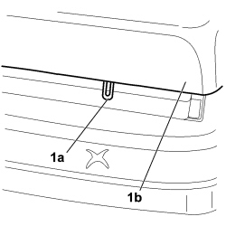
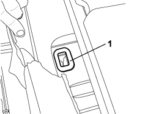

7050A20 ONE-PIECE REAR SEAT CUSHION - R.R.
- Path
- Procedures > 70 FITTINGS > 7050 REAR SEATS > 7050A REAR SEAT ASSEMBLY > 7050A20 ONE-PIECE REAR SEAT CUSHION - R.R.
- Kind
- repair procedure (removal / refitting; the operation number is the code)
- Applies to
- all engines; all production periods
- Interactive page
- https://sloeber94.github.io/elrnDB-fCrm/en/#/194001143
Applies to: all engines; all production periods
 Removing
Removing
 Refitting
Refitting1. Release the two mounting tabs (1a) for the seat cushion (1b).

Applies to: all engines; all production periods
- Lift up the seat cushion at the front.
- Release the seat cushion from the housing and remove it from the vehicle.
Applies to: all engines; all production periods
Refitting
Removing- Check that the seat cushion is not damaged.
1. Always replace the guide bushes in the mounting with new parts.

Applies to: all engines; all production periods
- Place the seat cushion in position in the vehicle.
- Attach the two mounting tabs for the seat cushion, fitting them correctly in the guide bushes.
Topics that link to this page (22)
- S072 NOISE IN REAR SEAT CUSHION
- 1040A10 FUEL TANK - R + R AND DECANT FUEL
- 1040A14 FUEL TANK - R + R FOR REPLACEMENT
- 1040A70 SUBMERGED PUMP ASSEMBLY COMPLETE WITH LEVEL GAUGE CONTROL - R + R
- 1040B56 REAR FUEL RETURN PIPE - R.R.
- 5020M30 PUMP FOR METERING FUEL TO SUPPLEMENTARY INDEPENDENT HEATER R R
- 5505A48 CONTROL UNIT (DIGITAL NETWORK NODE) IN BOOT COMPARTMENT - R.R.
- 5505C41 PASSENGER COMPARTMENT WIRING - R.R
- 5570T70 PAGER/COMPACT DISC WIRING HARNESS - R&R OR REPLACE
- 5580C60 REAR SEAT SIDE BAG MODULE (ONE), LEFT OR RIGHT - R.R.
- 7040B18 LOAD COMPARTMENT LOAD PLATFORM SIDE TRIM ONE LH OR RH - R.R
- 7040B24 LOAD COMPARTMENT TOP TRIM (ONE) - R+R
- 7040H42 REAR PILLAR TRIM (ONE), LEFT OR RIGHT- R.R
- 7040L18 PASSENGER COMPARTMENT FLOOR REAR CARPET - R.R.
- 7050A13 SPLIT REAR SEAT LEFT BACKREST - R.R.
- 7050A15 SPLIT REAR SEAT RIGHT BACKREST - R.R.
- 7050A33 REAR SEAT CUSHION SOUND DEADENING DEVICE/SPACER - R R
- 7050A47 SIDE PANEL ONE OF REAR SEAT SQUAB LH OR RH R R
- 7050D20 REAR SEAT CUSHION TRIM - R.R.
- 7065B14 ANCHORAGE ROD FOR (ONE) REAR SEAT BELT LEFT OR RIGHT - R.R.
- 7065B18 CENTRE REAR SEAT BELT - R.R.
- 7065B31 ISOFIX CONNECTION (ONE) - R R